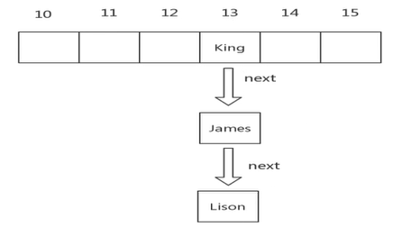

hashmap
底层执行原理
HashMap的存储结构
数组、链表、红黑树(jdk1.8)
特点
- 快速存储
- 快速查找(O(1))
- 可伸缩
hash算法
所有的对象都有hashCode(使用key的)
hash值的计算是 (hashCode) ^ (hashCode >>> 16)
数组下标计算
数组默认大小:16
数组下标: hash & (16 - 1) = hash % 16
Hash冲突
Hash冲突
单向链表: 用于解决Hash冲突的方案，加入一个next记录下一个节点

扩容
扩容
数组变长2倍 0.75
触发条件: 存储比例达到 75%
红黑树
红黑树是一种二叉树，高效的检索效率
触发条件: 在链表长度大于8的时候，将后面的数据存在红黑树中。
Hashtable 和 ConcurrentHashMap 如何实现线程安全
- 未作同步控制时，代码在多线程下是不安全的。
- HashMap的线程是不安全的
- HashTable 都加入了synchronized
- ConcurrentHashMap 保证性能和线程安全
HashTable 整个只有一个锁, 而 ConcurrentHashMap 使用了分段锁
分段锁的思想
JDK 1.7 之前,1000个桶分为16段上锁,而1.8及以后每个桶都有自己独立的锁.
确保了数据操作的高性能.
原文作者: edxuanlen
原文链接: https://edxuanlen.tk/2020/03/12/hashmap/
版权声明: 转载请注明出处(必须保留作者署名及链接)